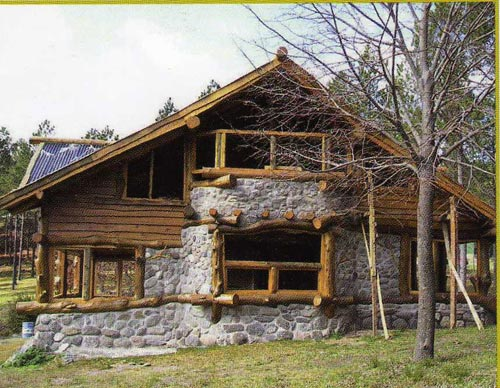

UBICACION: San Martin de Los Andes
METROS CUADRADOS: 70m²
HABITACIONES: 2
DESCRIPCION: Cabaña "LOS HERNANDEZ".
Esta ubicada en las afueras de San Martin de los Andes, es una cabaña rústica con 2 habitaciones, cocina, living y baño. Cuenta con 2 pisos y calefacción, es una buena opción para las vacaciones.

UBICACION: Junin De Los Andes
METROS CUADRADOS: 100m²
HABITACIONES: 4
DESCRIPCION: Cabaña "LOS ANDES"
Esta ubicada en las afueras de Junin de los andes
es una cabaña rusica con 4 habitaciones, cocina, livin y 2 baño, cuenta con 2 pisos y calefaccion, es una buena opcion para las vacaciones.